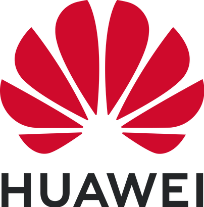
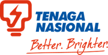

Network | Datacom | Automation
Specializing in Metro-E/Enterprise network, Data communication technologies and automated solutions.
About Me
Career Summary
Achievement
Technical Expertise

About Me
"Hi everyone, I'm Muhammad Azizul — a Datacom Engineer dedicated in solving network challenges through automation, scripting, and smart infrastructure design.
Always ready to push my limit and find better ways to work!"
Certificates

First-Class Honors Degree - Bachelor of Electrical Engineering
Universiti Teknologi Malaysia

HCIA - Routing & Switching
Huawei
Career Summary

TNB - INTERNSHIP
JUN 2019 – AUG 2019
- Joined 3 different technical department which are Fault Finder, SAVR (Sesalur Atas Voltan Rendah) and substation.
- Carried out technical tasks for each department.
HUAWEI - NETWORK ENGINEER
OCT 2020 – OCT 2022
- TM Stellar Delivery Project - commissioning Huawei switches and servers for TM Alpha cloud expansion.
- TM NMS Modernization - migrating thousand of FTTH and MSAN devices from old NMS U2000 to new NMS NCE, leading the team in technical aspect and communication with customer.
- Digi iBeam IPRAN - responsible in topo reengineering, link upgrade, service migration and new Huawei router integration.

TIME - IP ENGINEER
OCT 2022 – PRESENT
- Responsible in provisioning TIME Metro E Enterprise services (Internet Direct, Lease Line, IPVPN, VoIP & IP Transit)
- Carry out TIME MPLS Metro-E troubleshooting and deep dive inside customer requirement regarding service integration.
Key Projects & Achievements
TM Stellar Delivery Project
- Managed to commission Huawei switches and servers for TM Alpha cloud expansion
- Managed to provide project LLD and materials
- Performed Hardware Acceptance Test (HAT) on installed devices.
Server
Huawei
Cloud
TM NMS Modernization
- Migrated thousands of network devices from U2000 to new NMS NCE
- Managed to integrate customer OSS with NCE
- Obtained TM Appreciation letter from TM General Manager
NMS
System Monitoring
OSS
Digi iBeam IPRAN
- Fully applied IP knowledge: OSPF, BGP, MPLS, L2VPN and L3VPN.
- Implemented Digi IPRAN topology reengineering and link upgrade.
- Managed to complete many migration without causing network interruption.
Datacom
Router
IPRAN
TIME Metro-E Enterprise Project
- Managed to complete MBSB IPVPN Project (100 sites)
- Managed to complete PLUS MMOC modernization project (more than 200 sites)
- Managed to migrate critical BNM IPVPN service from old network to new Metro-E network
Enterprise
Metro-E
IP core
Self IT Project
- Provision Home Network with secure remote access
- Implemented Wake On LAN (WOL) on remote server
- Self-Hosted remote storage and Backup solution
Home Network
WOL
OpenVPN
Network Operations Automation
- Created custom automation tools using Python
- Developed Macro VBA Excel solutions for data processing
- Managed to help Operation team with various tools
- Reduced manual tasks by 70%
Python
VBA
Automation
Technical Expertise
Network Infrastructure
- Routing & Switching
- MPLS L2VPN (VLL, VPLS & VSI)
- MPLS IPVPN
- BGP (Full route/Default route)
- Network Redundancy
Automation & Scripting
- Python
- PowerShell
- Bash Scripting
- Excel VBA
Security
- OpenVPN
- IPsec
- Encryption
- Access Control
Let's Connect
Have any questions, queries, or something to share? Feel free to reach out using the contact details below.